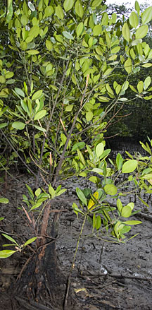
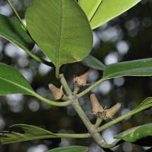
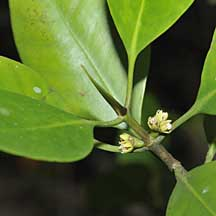
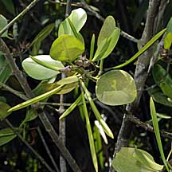
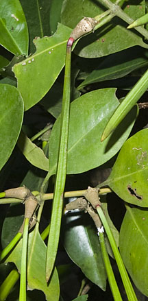

|
|
| plants text index | photo index |
| mangroves | Ceriops in general |
| Tengar merah Ceriops zippeliana Family Rhizophoraceae updated Jan 2013 Where seen? This beautiful mangrove with 'perky' propagules is sometimes seen in our mangroves, often as shrubs or small trees. This species was first described in 2008! It was previously listed as Ceriops sp. nov. in our older mangrove checklists. Features: A shrub to tree 12m tall. Bark brownish with some lenticels, flaky at the base. Leaves oval (tips not pointed) (7-11cm), glossy green. Leaf stalk usually not pinkish. Stipule flattened knife-like. Flowers small (0.5cm) with tiny white frilly petals. Several flowers on a short stalk, but not as many flowers as in Tengar (Ceriops tagal). Fruit brown with a textured pattern: this is the identifying feature of this species. Hypocotyl long pointed (9-17cm long) with fluted ridges along the length and a red collar when ready to drop off. The propagules point upwards and in all directions, not all hanging downwards as in Ceriops tagal. Sometimes with stilt roots. Status and threats: It is listed as 'Endangered' on the Red List of threatened plants of Singapore. |
 Sometimes with stilt roots. Pulau Ubin, Feb 11 |
|
`
|
 Pulau Ubin, Jan 09 |
 Leaves oval. Pulau Ubin, Jul 09 |
|
 Flowers small, a few on a short stalk. Pulau Ubin, Jan 09  White petals with frilly edges. Pulau Ubin, Jan 09 |
 Brown 'fruit' with textured surface. Changi Creek, Apr 09  Propagules point upwards and other directions. Pasir Ris Park, Mar 09 |
 Red collar on ripe propagule. Ridged propagules. Pulau Ubin, Aug 09 |
| Tengar merah on Singapore shores |
| Photos of Tengar merah for free download from wildsingapore flickr |
| Distribution in Singapore on this wildsingapore flickr map |
|
References
|